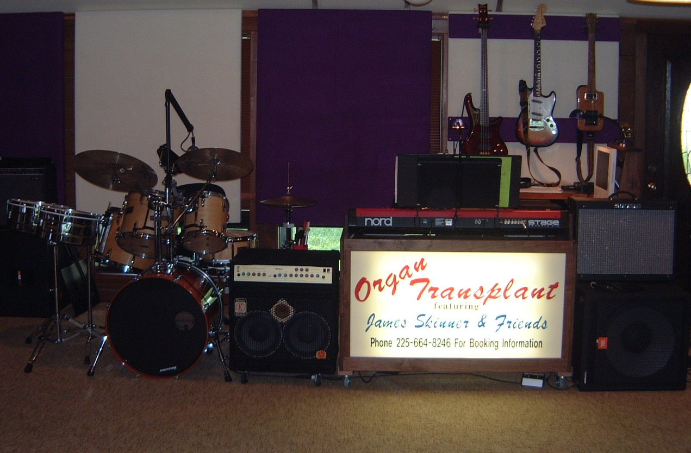

| upcoming shows |
| songs |
| rates |
| photo archive |
| catalog |
| contact |
Louisiana Soul Stew a mix of Motown, R&B, Classic Rock, Jazz & Funk Organ Transplant seems an odd name for a band until you know the origin. My first love is the Hammond B3 organ, an instrument I still play for live performances. Moving a B3 and a Leslie speaker cabinet is pretty tough since the organ weighs around 350 lbs. and the Leslie speaker cabinet is another 150 lbs. It takes a special set of dollys, an enclosed trailer, a loading ramp and at least one good roadie to move this rig. So, the organ is ‘transplanted’ from my studio to your event. Organ Transplant performs a variety of music selected to work well for wedding receptions and private functions including corporate events such as seasonal parties. Music is selected from the most popular light rock, blues, and Motown styles of the 60’s through the 80’s. Take a look at the band’s play list by clicking on the song list menu item. The core of Organ Transplant is singer Stephanie Mayeaux and myself, James Skinner on organ and piano. For more intimate occasions, we do a ‘piano bar’ set reminiscent of the Vonda Shepherd routine on the old Alley McBeal TV show. For larger events, we add a guitar player, bass player, and male vocalist and for a really special occasion may add a saxophone player.
|
|
|
Stephanie Mayeaux |
Vocals |
|
Auditioning - Want the job? |
Drums & Vocals |
Melvin Simpson |
Guitar |
Jordan Dewitt |
Bass Guitar |
James Skinner |
Organ & Piano |
| On Stage This Week | ||
|
 |
||